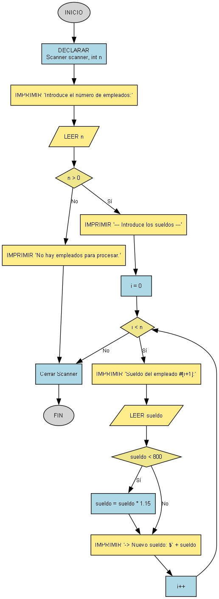

Aumento de Sueldo Condicional
Una empresa aplica un aumento de sueldo del 15% a todos sus trabajadores cuyo sueldo actual es inferior a $800. Escribe un programa que pida los sueldos de N trabajadores y muestre el nuevo sueldo de cada uno.

Requisitos
Todo el código debe estar dentro del método main.
- Pide al usuario el número de empleados con:
"Introduce el número de empleados: ". - Usa un bucle
forpara procesar cada empleado. - Dentro del bucle, pide el sueldo de cada uno con:
"Sueldo del empleado #[num]: ". - Si el sueldo es menor a 800, aplícale un aumento del 15% (
sueldo * 1.15). - Imprime inmediatamente el nuevo sueldo de ese empleado, formateado a dos decimales, con el texto:
" -> Nuevo sueldo: $[sueldo]".
Ejemplo de uso esperado
Introduce el número de empleados: 3
--- Introduce los sueldos ---
Sueldo del empleado #1: 500
-> Nuevo sueldo: $575.00
Sueldo del empleado #2: 800
-> Nuevo sueldo: $800.00
Sueldo del empleado #3: 1000
-> Nuevo sueldo: $1000.00